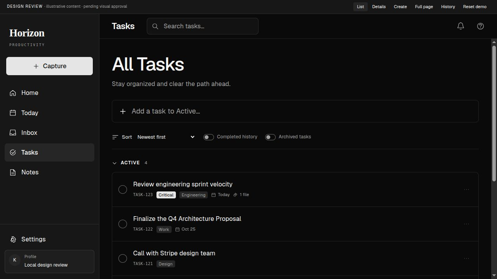
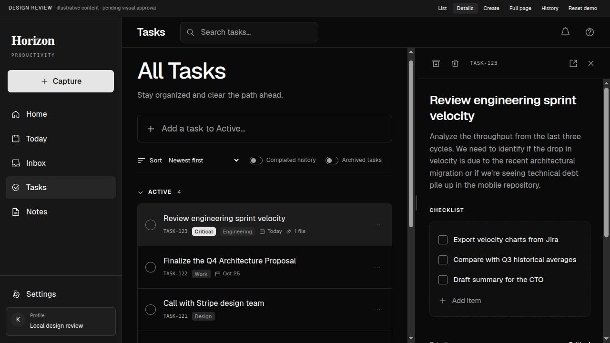
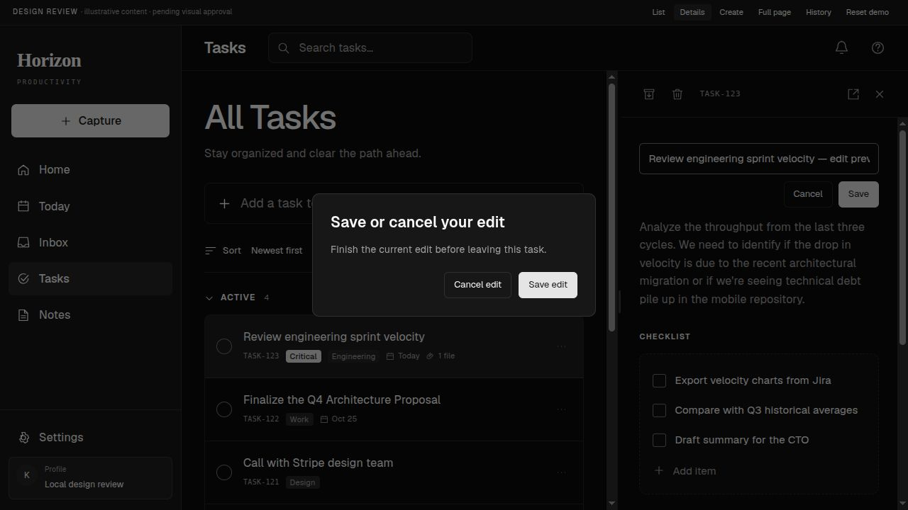
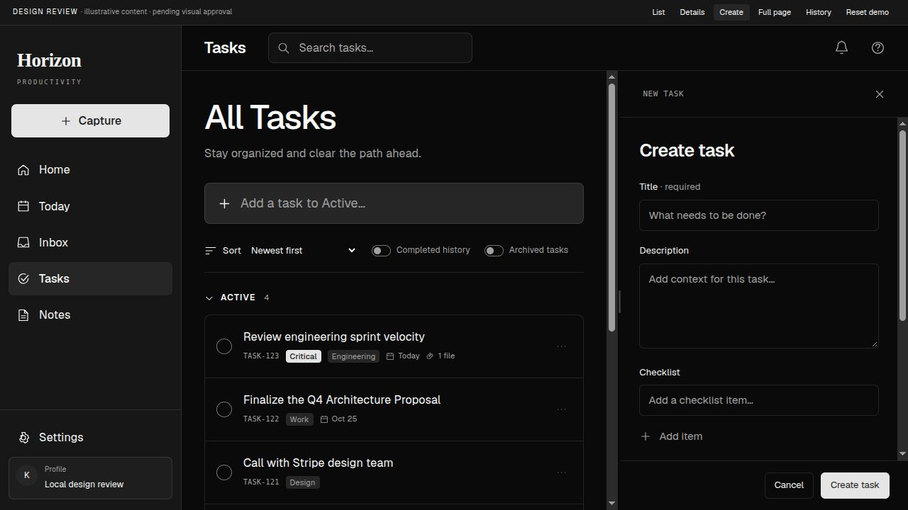
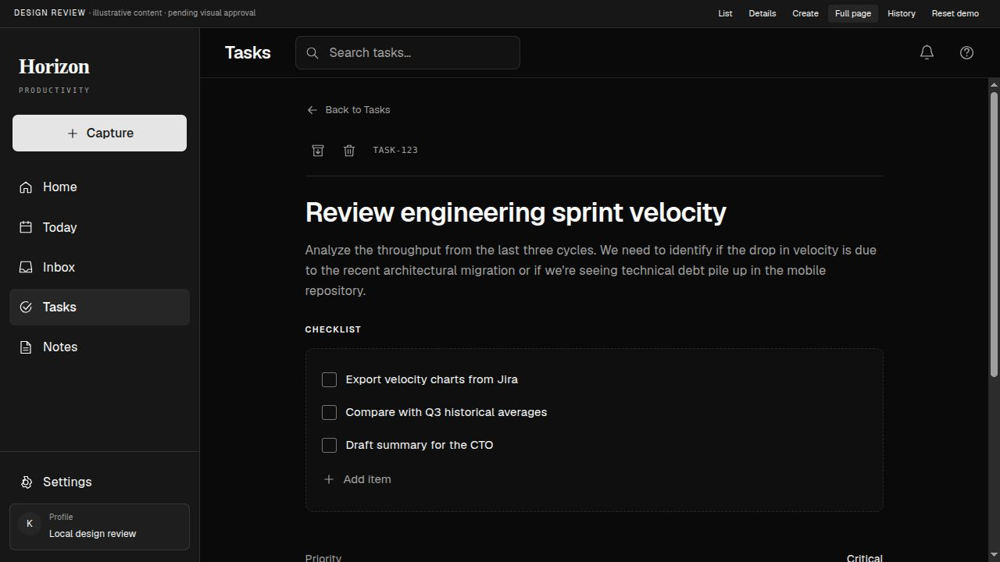
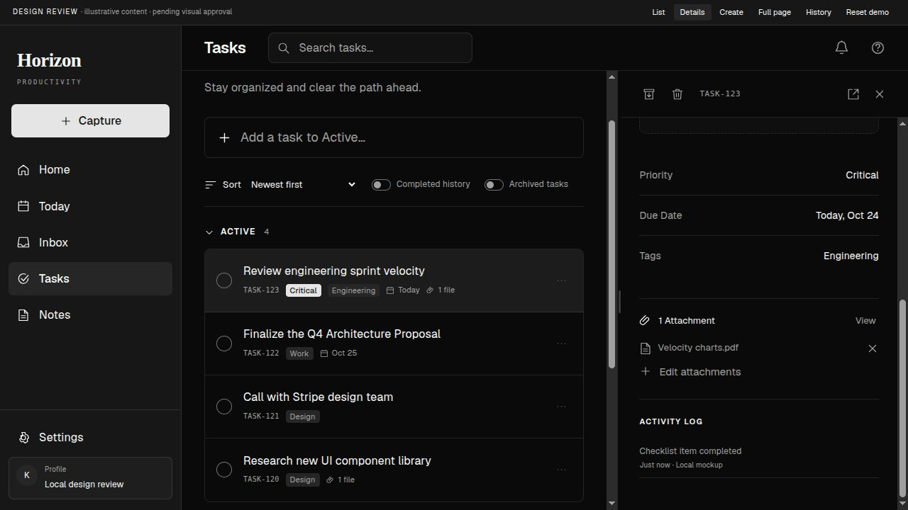
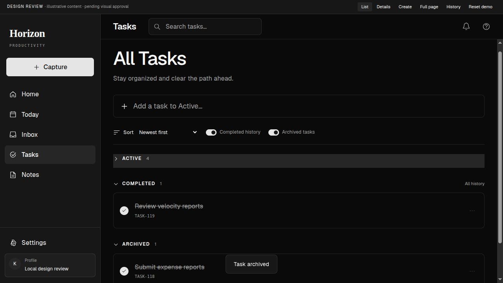
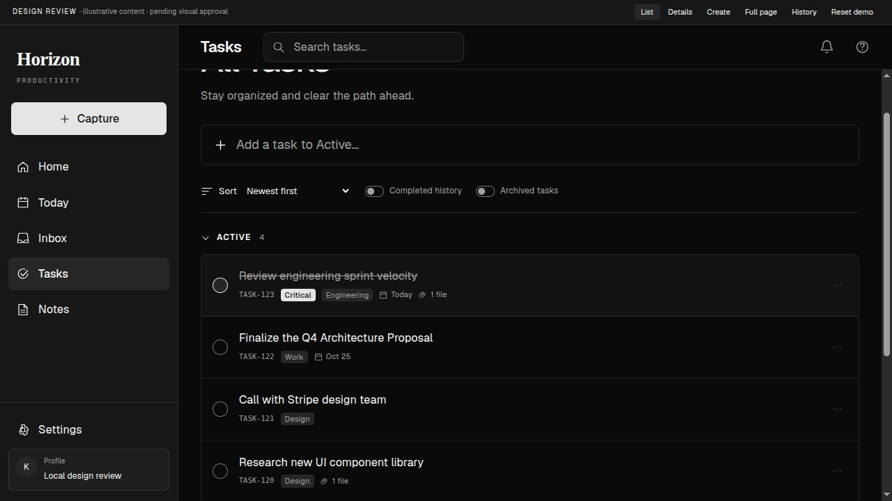

Tasks workspace
Approved initial version · 2026-10-10
01 · Default list
02 · Task side panel
03 · Unsaved edit
04 · Creation panel
05 · Dedicated page
06 · Details metadata
07 · History and archive
08 · Completion reversal